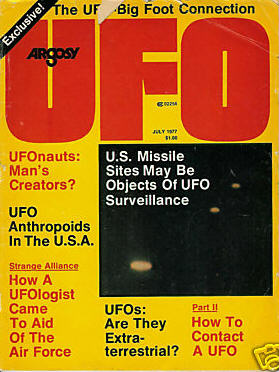
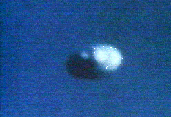
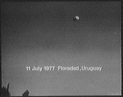
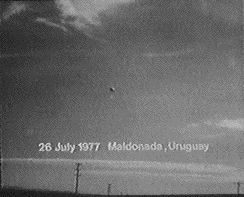

Couverture de Argosy UFO ce mois-là

A Gonesse (Val d'Oise), observation d'une soucoupe renversée pendant 20 mnGazette du Val d'Oise, 16 juillet 1997.
A Marly-le-Roi (Yvelines), un couple observe les
évolutions de 2 lumières jaune-orangées d'abord immobiles puis se déplaçant dans le ciel. Une des 2 lumières
disparait instantanément et les témoins quittent leur poste d'observation avant la disparition de la 2ème lumière.
Les gendarmes recevront des courriers relatant cette observation, mais les témoins ne répondront jamais à la
convocation de la gendarmerie GEPAN : PAN classé C.
A Zhang Po (Fujian, Chine), 3000 personnes sont réunies
pour assister à une projection en plein air du film roumain, Alert on the Danube Delta. 2 immenses ovnis
orange fondent brusquement du ciel pour stationner au-dessus des têtes des spectateurs, bourdonnants et si proches
des gens qu'ils peuvent en ressentir la chaleur. Quelques secondes plus tard, ils s'élèvent et disparaissent dans la
nuit.
Début d'une vague d'agressions autour du village de Corales (à 50 km au nord de Belem) qui se terminera en .
Robert Pratt pourra recueillir, en 1993-07, le témoignage de la doctoresse Wellaide Cecim Carvalho qui a constaté les blessures infligées par
les attaques de mystérieux ovnis.
Le lieutenant Flt de la RAF A. M. Wood signale des objets brillants
perchés au-dessus de la mer. Il ajoute que l'objet le plus proche était lumineux, rond et 4 à 5 fois plus
grand qu'un hélicoptère Whirlwind. Les ovnis sont rapportés être à 3miles en mer à une altitude de 5000 pieds environ. L'officier, dont le rapport est soutenu par le Cpl Torrington et le sergent Graham, indique : Les
objets se sont séparés. Puis un est parti à l'ouest de l'autre, et en manoeuvrant changea de forme pour prendre
celle d'un crops avec des projections comme des bras et des jambes. Les hommes qui étaient positionnés au poste
de piquet de la station de la RAF purent observer les objets étranges pendant
. Dans le même teê station radar détecte des objets à une position identifique à celle où les
hommes les ont observés. Il les enregistre entre 30 et 35 ° avant qu'ils disparaissent de l'écran. Le rapport décrit
le lieutenant Flt Wood comme fiable et sobre, et ajoute: 2 contacts ont été notés sur radar, tous deux T84
et T85, à RAF Boulmer. Ils ont également été vus sur l'image radar de Staxton Wold qui est relayée à West
Drayton... En voyant les objets sur le radar le contrôle en poste vérifia avec le SRO à RAF West Drayton pour
savoir s'il pouvait voir les objets sur le radar fourni par la RAF Staxton WoldMoD < Robert Verkaik, "UK's Ministry Of Defense UFO Files Released", The Independent, UK, 22 janvier 2005"RAF Boulmer reports of UFO sightings were hushed up".
A Floradad (Uruguay), un reporter en mission d'une des plus grandes villes uruguayennes
photographie (ci-contre) un objet étrange alors qu'il tourne de nombreuses fois autour de lui.
A Urmatt (Bas Rhin), dans la forêt, 1 chasseêrve dans le
ciel 1 boule lumineuse de plusieurs couleurs qui se déplace. Continuant son chemin vers la lisère il aperçoit, au
même endroit que laêlumineuse qui a disparu, des disques de couleur pâle de la grosseur d'une assiette. Le chasseur
déconcerté se rend jusqu'à un chalet pour trouver une autre personne pouvant confirmer ce qu'il voit. Un autre
témoin confirmera aux gendarmes avoir vu aux jumelles 3 disques lumineux immobiles dans le ciel. Vers
plus aucun phénomène n'était visible dans le ciel. Aucun autre témoignage pouvant apporter un
complément d'information n'a été recueilli sur ce phénomène GEPAN : PAN classé C.
A Saint André-de-Cubzac (Gironde), à bord de sa voiture,
une femme et sa fille voient durant quelques s une soucoupe, entourée d'un halo légèrement jaune, se déplaçant
lentement dans le ciel en tournant sur elle-même et semblant descendre vers sa voiture. Mais reprenant de
l'altitude, le phénomène disparait en direction de Bordeaux Témoignage par lettre < GEPAN : PAN classé C.
Frank Press, conseiller scientifique du président James Earl Carter, adresse une lettre à Robert Frosch, administrateur de la NASA, pour lui recommander d'organiser un petit comité d'enquête (...) afin de voirên a
trouvé de nouveaux éléments significatifs depuis le rapport Condon Sturrock, Peter Andrew: 2001.

A Maldonada (Uruguay), photographie (ci-contre) .
A Arbresle (Rhône), des personnes d'une même famille
observent durant sous le plafond nuageux 3 phénomènes de forme pyramidale évasée, à la partie
supérieure arrondie. Ils émettent une lumière blanche et de couleur d'intensité variable. Ils disparaissent
silencieusement et en quelques s vers 4h pour réapparaître vers . Ils disparaissent ensuite
définitivement dans les nuages GEPAN : PAN classé C.
{kind=link}